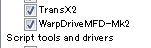

WarpDrive MFDは、宇宙船のワープ航行を可能にするMODです。
Orbiter2010およびOrbiter2016の両方で使用できます。
WarpDrive MFD Mk2
Orbiter2010、Orbiter2016のどちらでも使えます。
インストールは、ファイルを解凍して中身をOrbiterのフォルダに上書き。
LaunchpadのModulesタブでWarpDriveMFD-Mk2にチェックを入れる。

重要：左MFD、左側のShiftキーでないと反応しません。
| Shift+数字キーの同時押し （テンキー不可） |
ワープ係数を決める |
| Shift+W WRPボタン |
ワープの開始・終了 |
| Shift+D DRPボタン |
ワープのリセット |
| Shift+B REVボタン |
前進・後退の切り換え |
| Shift+G GRVボタン |
重力を無効にする |
ワープ係数の3乗×光の速度がワープ中の速度になります。
ワープ1なら亜光速、最高速のワープ9なら光速の729倍になります。
ちなみに、これはスタートレックTOSのワープ速度と同じ設定です。
ワープ・ドライブ | Memory Alpha
一部のMODでは、キーが干渉して使えないことがあります。
目標の惑星と相対速度を合わせる機能はありません。
例えば、地球から火星までワープで飛行したとしても、周回軌道に乗せたり着陸したりするには大量の推進剤か強力なエンジンが必要になります。